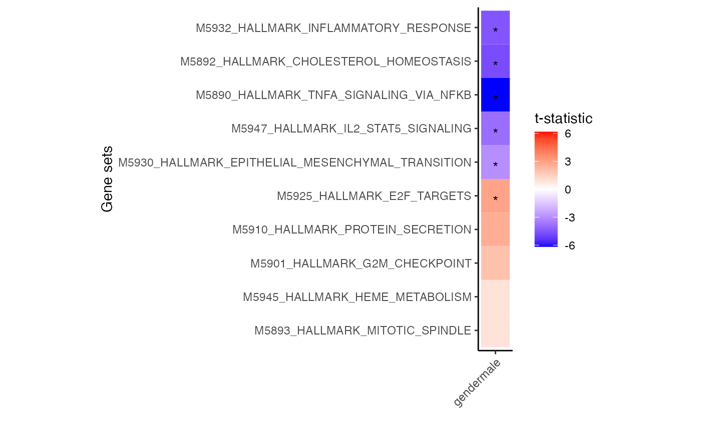

Heatmap of zenith results showing genesets that have the top and bottom t-statistics from each assay.
Usage
plotZenithResults(
df,
ntop = 5,
nbottom = 5,
label.angle = 45,
zmax = NULL,
transpose = FALSE,
sortByGeneset = TRUE
)Arguments
- df
result
data.framefrom zenith_gsa- ntop
number of gene sets with highest t-statistic to show
- nbottom
number of gene sets with lowest t-statistic to show
- label.angle
angle of x-axis label
- zmax
maxium of the color scales. If not specified, used range of the observed t-statistics
- transpose
transpose the axes of the plot
- sortByGeneset
use hierarchical clustering to sort gene sets. Default is TRUE
Examples
# Load packages
library(edgeR)
#> Loading required package: limma
#>
#> Attaching package: ‘limma’
#> The following object is masked from ‘package:BiocGenerics’:
#>
#> plotMA
library(variancePartition)
#> Loading required package: ggplot2
#> Loading required package: BiocParallel
library(tweeDEseqCountData)
# Load RNA-seq data from LCL's
data(pickrell)
# Filter genes
# Note this is low coverage data, so just use as code example
dsgn = model.matrix(~ gender, pData(pickrell.eset))
keep = filterByExpr(exprs(pickrell.eset), dsgn, min.count=5)
# Compute library size normalization
dge = DGEList(counts = exprs(pickrell.eset)[keep,])
dge = calcNormFactors(dge)
# Estimate precision weights using voom
vobj = voomWithDreamWeights(dge, ~ gender, pData(pickrell.eset))
#> Fixed effect model, using limma directly...
# Apply dream analysis
fit = dream(vobj, ~ gender, pData(pickrell.eset))
#> Fixed effect model, using limma directly...
#> User can apply eBayes() afterwards...
fit = eBayes(fit)
# Load Hallmark genes from MSigDB
# use gene 'SYMBOL', or 'ENSEMBL' id
# use get_GeneOntology() to load Gene Ontology
gs = get_MSigDB("H", to="ENSEMBL")
# Run zenith analysis
res.gsa = zenith_gsa(fit, gs, 'gendermale', progressbar=FALSE )
# Show top gene sets
head(res.gsa, 2)
#> coef
#> M5890_HALLMARK_TNFA_SIGNALING_VIA_NFKB gendermale
#> M5892_HALLMARK_CHOLESTEROL_HOMEOSTASIS gendermale
#> Geneset
#> M5890_HALLMARK_TNFA_SIGNALING_VIA_NFKB M5890_HALLMARK_TNFA_SIGNALING_VIA_NFKB
#> M5892_HALLMARK_CHOLESTEROL_HOMEOSTASIS M5892_HALLMARK_CHOLESTEROL_HOMEOSTASIS
#> NGenes Correlation delta se
#> M5890_HALLMARK_TNFA_SIGNALING_VIA_NFKB 119 0.01 -1.001965 0.1618263
#> M5892_HALLMARK_CHOLESTEROL_HOMEOSTASIS 37 0.01 -1.091536 0.2296170
#> p.less p.greater PValue
#> M5890_HALLMARK_TNFA_SIGNALING_VIA_NFKB 2.053663e-08 1.0000000 4.107327e-08
#> M5892_HALLMARK_CHOLESTEROL_HOMEOSTASIS 5.493684e-06 0.9999945 1.098737e-05
#> Direction FDR
#> M5890_HALLMARK_TNFA_SIGNALING_VIA_NFKB Down 1.930444e-06
#> M5892_HALLMARK_CHOLESTEROL_HOMEOSTASIS Down 2.582032e-04
# for each cell type select 3 genesets with largest t-statistic
# and 1 geneset with the lowest
# Grey boxes indicate the gene set could not be evaluted because
# to few genes were represented
plotZenithResults(res.gsa)
